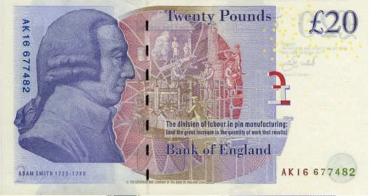

这是一部2001年的电影，讲的是1994年诺贝尔经济学奖获得者约翰纳什（John Nash)的故事。 这个片段发生在上世纪50年代，二十多岁的纳什在普林斯顿大学大学数学系读博士。年轻的学生们在学校附近的一个酒吧喝酒，当时我们的主人公正在为他的博士论文发愁：我们可以看到他正在一叠稿纸上演算着什么，并没有和他的同学那样在玩。正在那时候，一群（确切来说应该是5个）漂亮的女生走进了酒吧；刚好纳什的同学总共也是5个，他们一个个就开始想入非非，有点蠢蠢欲动了。很显然，五个女生当中那位金发美女最漂亮；怎样才能跟她搭讪成功并请她喝杯酒呢？这本来就是一个非常俗套的校园男生女生的故事, 但是藤校的数学博士生们却由追美女想到了亚当·斯密！
亚当·斯密是公认的现代经济学之父，他1776年出版的《国富论》是英国公认的三大科学名著之一；另外的两部是牛顿的《自然哲学的数学原理》和达尔文的《物种起源》。这后面两位在我们中国基本上是家喻户晓的了，相比而言，亚当斯密并没有另外两位那么有名；就其原因，我认为有以下两点：
亚当·斯密在书中对中国当时经济状况的评论：停滞的（STATIC）。1776年是中国的乾隆四十年，当时正是历史上的“康乾盛世”的顶峰；我不知道亚当斯密是怎么得出那个结论的，所以非常有意思。顺便说一下，亚当·斯密比我们的乾隆皇帝晚出生12年，刚好是一轮；但是他比我们的乾隆皇帝早走9年。所以他们基本上是算同一时代的人。
亚当·斯密应该是鼓吹自由竞争的市场经济的第一人；在书中他把市场描述成“看不见的手”，把那些“利己”的卖者和买者联系在一起，客观上成就着一个地区，国家的经济兴衰。一言以蔽之，“治大国，若烹小鲜”，政府不用瞎折腾，交给市场好了。由于众所周知的原因，亚当·斯密在我们中国不是那么知名。
但在西方，亚当·斯密有着与牛顿和达尔文一样的知名度，《国富论》也是许多人必读的名著。例如，20英镑纸币背面印有政治经济学家亚当·斯密头像。

我们现在看看亚当·斯密的这么高大上的理论怎么会跟追女生联系到一起。回到开头，如果5位男生都想追5位女生中最漂亮的那位，按照亚当·斯密的理论，自由竞争嘛，5个人争相向她表白，这样很可能5个人被金发美女团灭。更糟糕的是，当男生们在被金发美女拒绝后再向她的4个朋友示好时，也会大概率的会被据；因为没有女生愿意当备胎。所以最终的结果很有可能就是五位美女一个也追不上。所以纳什当时就想，如果他们改变策略，从一开始他们就放弃最漂亮的那位金发美女，而向她的4位朋友发起进攻；那么4男4女很有可能变成4对。这就是纳什当时的想法，所以他说亚当·斯密错了，他的理论需要修正。这里，可以看得出纳什始终对女生没有兴趣，所以他才能置身事外从而脑洞大开地想出这么个理论。但是当他兴高彩烈地离开酒吧时，还是非常发自内心地向金发美女说了声“谢谢”，弄得美女非常的莫名其妙。
这当然是好莱坞电影的桥段，肯定不会是真实的历史，但是“失事求似”！《国富论》自出版一百多年来，欧美各国凡是奉行了斯密的自由公平竞争的原则的国家都走上了繁荣富强的道路。但是伴随着市场的经济危机也一直没有消停过，尤其是上世纪二三年代的大萧条让人们对万能的市场也产生了怀疑。就像纳什想的那样，应该有种力量安排他的四位同学放弃最漂亮的金发美女而专注于她的四位同伴-因为他们不会自发地这么去做。那么这种力量来自何方呢？看看电影中，当纳什说出他的想法时，他的那位同学马上就说“你让我们放弃金发美女，是不是有私心；果真如此的话，你得去地狱！” 他的那种想法非常自然，因为经济学中一条非常重要的假设就是理性的人是利己的。所以他们5个人中的任何一个人都充当不了那样的角色；在现实中，只有政府可以。这就是后来取代了亚当·斯密的另外一个英国经济学家约翰·梅纳德·凯恩斯；1936年《就业、利息和货币通论》的发表，标志着凯恩斯主义的诞生。凯恩斯主张政府要作为，不能放任市场自由发展。这里需要指出来的是，凯恩斯主义不是前苏联的计划经济；计划经济是完全消灭市场，一切听从中央计划。凯恩斯只是改良了亚当·斯密的自由市场理论，不是革命。从1776 到1936，整整160年！
我前面说过，亚当·斯密跟我们的乾隆爷是同一时代的人；与他们同时代的还有美国的第一任总统华盛顿。非常有意思的是，华盛顿和乾隆是同一年（1799）走的。还有，美国的独立宣言也是1776年发表的，跟《国富论》是同一年。同样在英国，1776也是瓦特改良后的蒸汽机的正式商用元年。我们的乾隆爷本来完全可以知道这一切，因为历史给了他一个机会：英国大使马尔嘎尼（George Macartney）1792年访华，以庆祝他83岁生日的名义。但是，历史没有但是，有的只是三个国家迥然不同的国运！
关于经济：汉语中一提到它，就是“经世济民”，就是使社会繁荣，百姓安居的意思，这是古代贤士的立世准则。但仅仅是停留在口号上，关于怎样才能经世济民，我没有读过任何类似于《国富论》的书，到现在都没有；希望将来能有。英语中经济（economics ）来自古希腊的oikonomia，意思为家庭管理（ household management）。《国富论》的全称是《国富论:国民财富的本质和聚因的探究》（An Inquiry into the Nature and Causes of the Wealth of Nations），我们不得不佩服西方人的事实求是的科学精神。